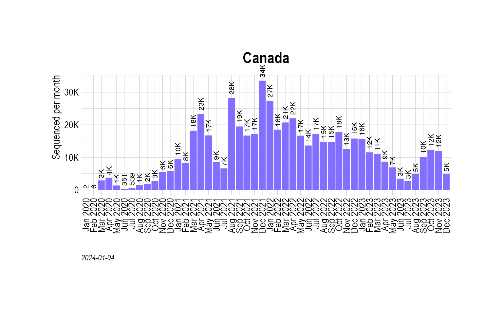

Multinomial modeling - Canada
Source:vignettes/MultinomialModeling_Canada.Rmd
MultinomialModeling_Canada.RmdPlot total sequenced cases
country_seq_stats <- TotalSequencesPerMonthCountrywise(gisaid_canada, rename_country_as_state = TRUE)
p0 <- BarPlot(country_seq_stats, ylabel = "Sequenced per month", color = "slateblue1", label_si = TRUE, xangle = 90, title = "Canada")
p0
Get VOCs
vocs <- GetVOCs()
omicron <- vocs[["omicron"]]
vocs[["omicron"]] <- NULL
custom_voc_mapping <- list(
`BA.1.1` = "Omicron-BA.1.1", `BA.1` = "Omicron-BA.1",
`BA.2` = "Omicron-BA.2"
)
for (omi in omicron) {
if (grepl(pattern = "^BA.1.*", x = omi)) {
custom_voc_mapping[[omi]] <- "Omicron-BA.1"
} else if (grepl(pattern = "^BA.2.*", x = omi)) {
custom_voc_mapping[[omi]] <- "Omicron-BA.2"
}
}
gisaid_canada_collapsed <- CollapseLineageToVOCs(
variant_df = gisaid_canada,
vocs = vocs,
custom_voc_mapping = custom_voc_mapping,
summarize = FALSE
)
gisaid_canada_collapsed_sel <- gisaid_canada_collapsed %>% filter(MonthYearCollected >= "Nov 2021")
vocs_to_keep <- table(gisaid_canada_collapsed_sel$lineage_collapsed)
vocs_to_keep <- vocs_to_keep[vocs_to_keep > 100]
gisaid_canada_collapsed_sel <- gisaid_canada_collapsed_sel %>% filter(lineage_collapsed %in% names(vocs_to_keep))
gisaid_canada_shared_dateweek <- SummarizeVariantsDatewise(gisaid_canada_collapsed_sel, by_state = TRUE)
head(gisaid_canada_shared_dateweek)## # A tibble: 6 × 4
## State DateCollectedNumeric lineage_collapsed n
## <chr> <dbl> <chr> <int>
## 1 Alberta 18932 Delta 134
## 2 Alberta 18933 Delta 98
## 3 Alberta 18934 Delta 94
## 4 Alberta 18935 Delta 96
## 5 Alberta 18936 Delta 66
## 6 Alberta 18937 Delta 54
fit_canada_multi_predsbystate <- FitMultinomStatewiseDaily(gisaid_canada_shared_dateweek)## # weights: 44 (30 variable)
## initial value 139210.293449
## iter 10 value 105873.939274
## iter 20 value 94720.569284
## iter 30 value 85357.614788
## iter 40 value 59377.501163
## iter 50 value 46470.602560
## iter 60 value 42859.155990
## iter 70 value 41958.540370
## iter 80 value 41329.055152
## iter 90 value 41090.749973
## iter 100 value 40315.568376
## iter 110 value 40197.198037
## iter 120 value 40072.828835
## iter 130 value 40020.245723
## iter 140 value 40017.969785
## iter 150 value 39978.395289
## iter 160 value 39894.741871
## iter 170 value 39832.835845
## iter 180 value 39736.260554
## final value 39712.587820
## converged
head(fit_canada_multi_predsbystate)## lineage_collapsed DateCollectedNumeric State prob SE df
## 1 Delta 18932 Alberta 9.998409e-01 2.213039e-06 NA
## 2 Omicron-BA.1 18932 Alberta 1.590300e-04 2.211974e-06 NA
## 3 Omicron-BA.2 18932 Alberta 5.771224e-08 1.159498e-09 NA
## 4 Others 18932 Alberta 1.923777e-08 5.090049e-10 NA
## 5 Delta 18939 Alberta 9.993739e-01 8.708190e-06 NA
## 6 Omicron-BA.1 18939 Alberta 6.256824e-04 8.701867e-06 NA
## asymp.LCL asymp.UCL DateCollected
## 1 9.998366e-01 9.998452e-01 2021-11-01
## 2 1.546946e-04 1.633654e-04 2021-11-01
## 3 5.543967e-08 5.998482e-08 2021-11-01
## 4 1.824014e-08 2.023540e-08 2021-11-01
## 5 9.993568e-01 9.993909e-01 2021-11-08
## 6 6.086270e-04 6.427377e-04 2021-11-08